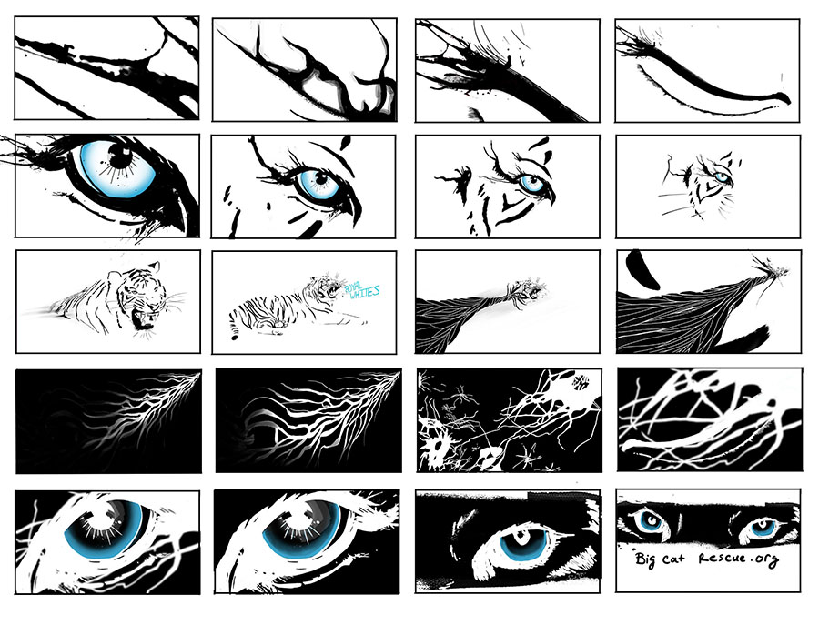
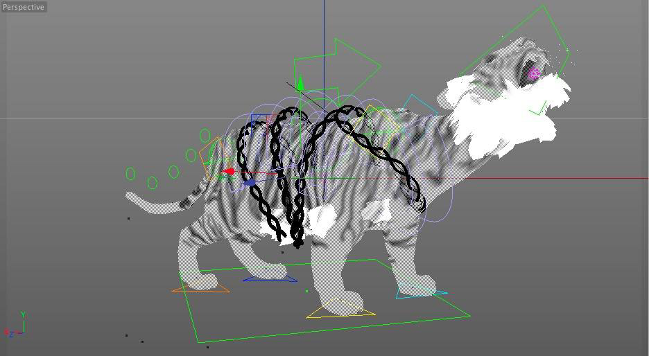
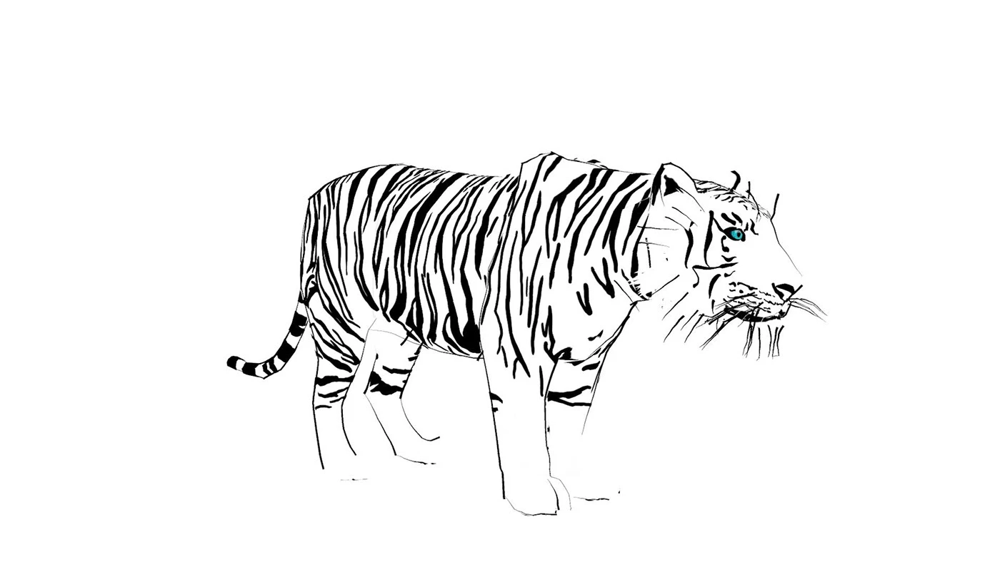
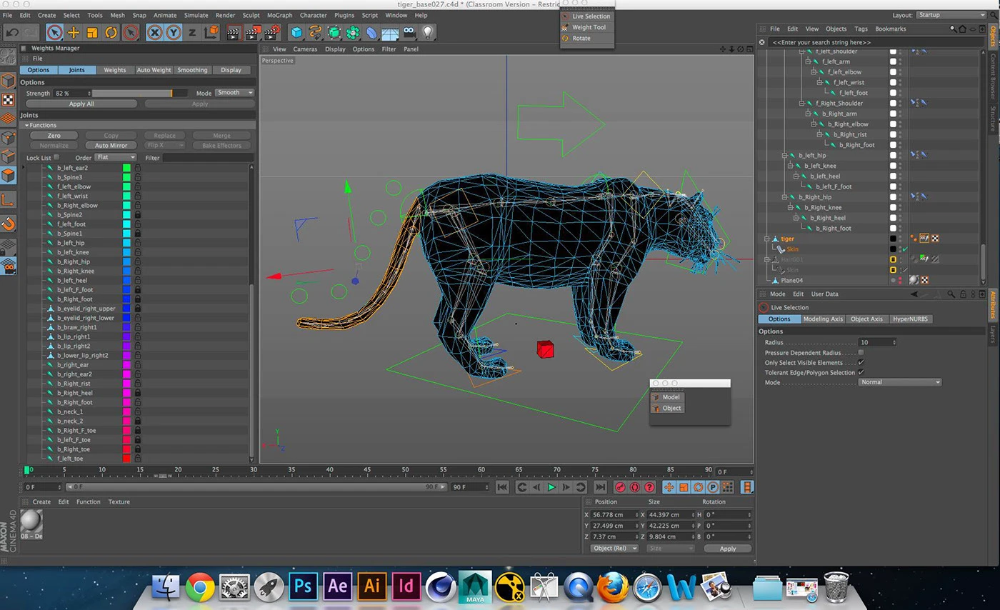
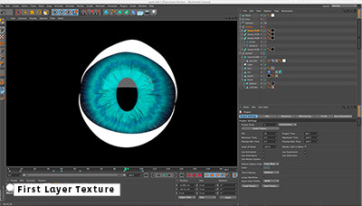

About this project
The Truth About White Tigers was my senior thesis at Ringling College of Art and Design. It's still one of my most recognizable projects and people seem to remember me by it. For me, looking at it now is a little painful, I see every mistake an amateur would make. It's good to look back every now and then and see how far I've come.
The Process
Watch a "behind the scenes" video.



